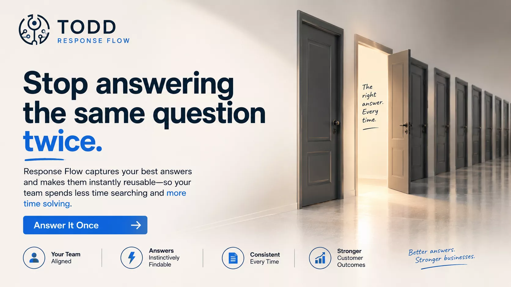

Every proposal, contract, note, and specification has value because of the work around it. Docs keeps that relationship intact so the next person knows not only what the file is, but why it matters.
The pain is not storage. The pain is losing momentum because the file is detached from the decision, client, or next action.

Important material usually exists already. We built Docs because clients kept hitting the same failure point: nobody could find the file when the work needed it, so the next step slowed down.
A signed contract sits in an inbox. Weeks later, nobody on the project remembers it's there — the file didn't disappear, the connection to the work did.
Docs keeps files tied to the work, record, or process that gives them meaning.
That makes document visibility part of the workflow instead of a separate search problem someone has to solve later.

Start in Docs to organize the workflow, or open the document list to review what already exists.
Docs reduces file drift, keeps documents tied to the work, and makes it easier for the next person to move without asking who has the file.
Open Docs, review the document list, and see how the right file stays attached to the work instead of becoming another folder trail.